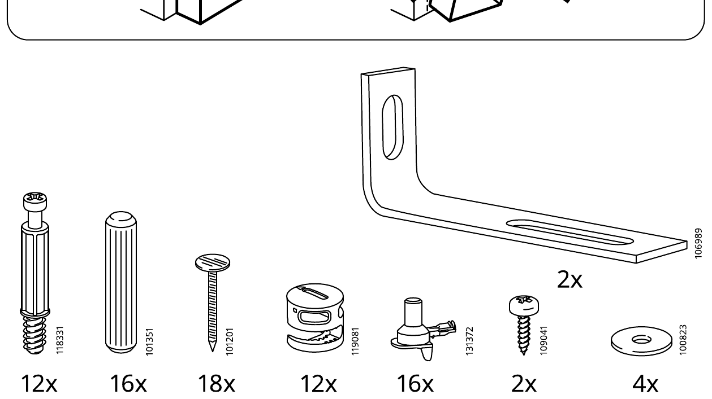
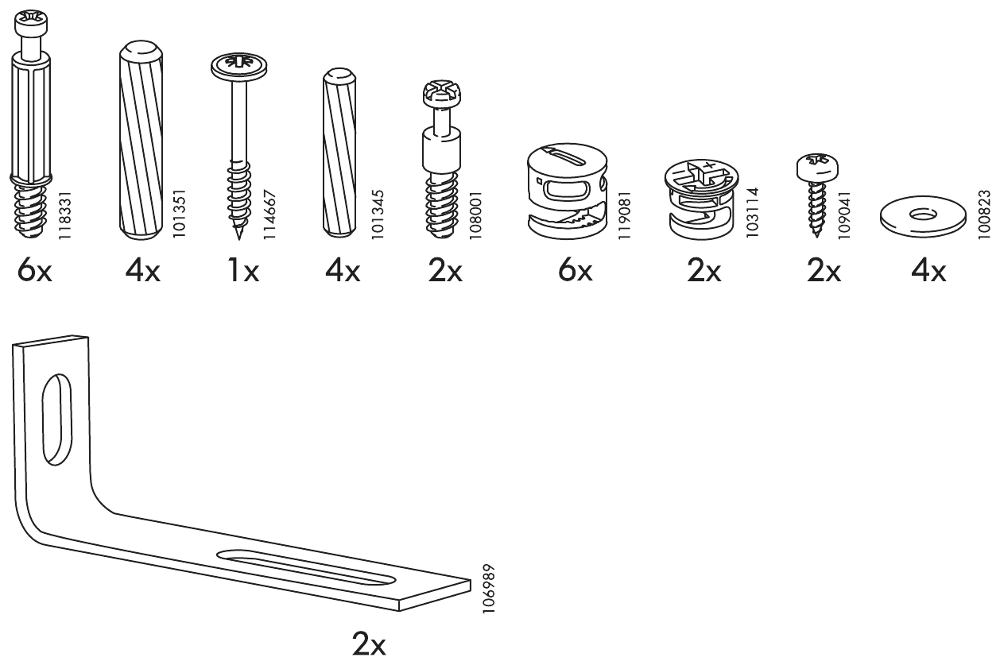
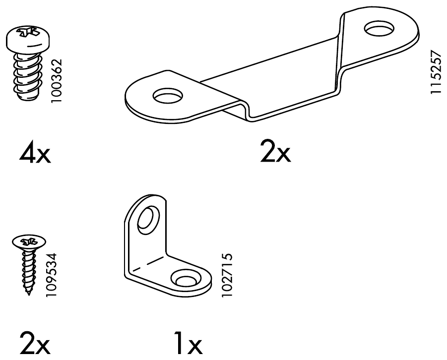

AA-1823127-9 · AA-982217-8 · AA-197501-5 · 31 步 · 3 个书柜 + 3 个加高单元
BILLY 转角书柜组装助手
示意动画，比例为估算，孔位和方向以下方说明书原图为准。拖动画面可旋转，点一下可放大局部。连续播放时，抽屉只演示一次。
柜体靠墙的位置有踢脚线吗？
回答由 Claude 根据本步原图和说明生成，可能出错。关键位置请再看原图。
虚拟格子
请把零件按上面的位置摆在软垫或托盘上，不需要实体格子。大板件说明书没有编号，暂不在格子内。
局部放大
开工前清点
数量来自说明书第 4–6 页。螺丝和连接件已和各步用量逐项核对。勾选后保存在这台设备上。
| 到齐 | 编号 | 数量 | 袋 | 用在 |
|---|



开工前先看
这个转角组合靠加高单元的支架固定到墙上，否则会倾倒。墙螺丝不随货提供，要按墙体另买。
- 工具：十字螺丝刀、一字螺丝刀、锥子、锤子、铅笔、尺。
- 在软垫上操作，避免板面损伤。
- 全程不要用电钻拧连接件和锁扣。
- 侧板很长，翻动和立起柜子时两人配合。
- 加高单元每个柜只放一层，说明书打叉了两层。
需要留意转角底板没有列在零件清单里；连接片只有一套，用在书柜顶或加高单元顶，二选一；3 套书柜墙面支架这个组合不用，留作备用。详见对应步骤。
本工具不是宜家官方产品，也不能替代随货说明书。